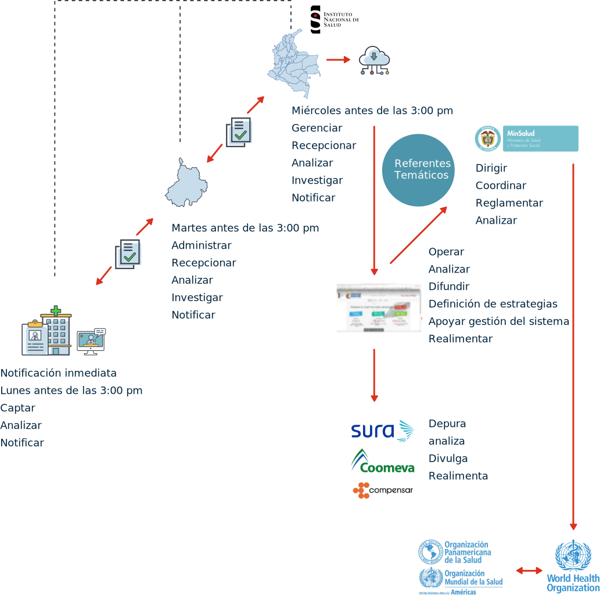

1. Vigilancia en salud pública del evento desnutrición aguda moderada y severa en menores de cinco años
Todos los niños tienen derecho a un nivel de vida adecuado para su desarrollo físico, mental, espiritual, moral y social (Convención sobre los Derechos del Niño, 1989).
Se debe garantizar, por parte de los países, la máxima medida que sea posible, para la supervivencia y el desarrollo del niño. Aun así, la desnutrición se ha convertido en una de las principales amenazas para la supervivencia, la salud, el crecimiento, y el desarrollo de las capacidades de los niños, como también para el progreso de sus países. La base del desarrollo humano implica tener cubiertas las necesidades básicas para sobrevivir (Wisbaum, 2011).
La creación de la vigilancia en salud pública, para prevenir la desnutrición aguda en menores de cinco años hace parte de la implementación del “Modelo de vigilancia del estado nutricional para la población Colombiana”, establecido en el Plan Nacional de Seguridad Alimentaria y Nutricional – PNSAN 2012-2019, y pretende contribuir en la disminución de la mortalidad infantil, evitable, por desnutrición en forma progresiva y de acuerdo con las metas establecidas en el Plan Decenal de Salud Pública (2012).
1.1 Usos y usuarios de la vigilancia del evento
Usos:
Poder detectar, de manera oportuna, a los menores de cinco años que presentan desnutrición aguda para canalizar las acciones dirigidas a disminuir la morbilidad y el riesgo de morir por esta condición.
A nivel institucional, los siguientes son los usuarios de la información:
El Ministerio de Salud y Protección Social (dirección de epidemiología y demografía y subdirección de salud nutricional, alimentos y bebidas).
Direcciones departamentales, distritales y municipales de salud.
Entidades Administradoras de Planes de Beneficios - EAPB.
Instituto Colombiano de Bienestar Familiar - ICBF.
Programas departamentales, distritales y municipales de seguridad alimentaria y nutricional.
1.2 Objetivos de la vigilancia del evento
Los objetivos que la vigilancia del evento busca, son dos:
Describir el comportamiento del evento, que permita establecer una línea de base que oriente las acciones de prevención y control de la desnutrición aguda, en menores de 5 años.
Producir alertas tempranas del acontecimiento de un caso y orientar en la toma de decisiones.
1.3 Definiciones operativas de casos
Para entender las características de la clasificación, observemos la siguiente tabla:
| Tipo de Caso |
Características de la clasificación |
|---|---|
|
Caso confirmado por clínica |
Se define un caso de desnutrición aguda en menor de cinco años, cuando el puntaje Z del indicador peso/talla está por debajo de –2 DE (Desviación Estándar) y/o presente edema nutricional. |
|
Categorías. Desnutrición aguda moderada: se determina cuando el puntaje Z del indicador peso para la talla, se encuentra entre –2 y –3 DE; puede acompañarse de delgadez o emaciación moderada. Desnutrición aguda severa: se determina cuando el puntaje Z del indicador, se encuentra por debajo de –3 DE; puede acompañarse de emaciación, hiporexia e irritabilidad. Marasmo: se caracteriza por la atrofia severa de la masa muscular y la grasa, las cuales ha utilizado el cuerpo como fuente de energía, dejando los huesos forrados en la piel. Kwashiorkor: se caracteriza por la presencia de edema bilateral (suele comenzar en miembros inferiores); el peso corporal se encuentra enmascarado por el edema y puede estar acompañado de erupciones en la piel y cambios en el color del pelo (signo bandera). |
|
| Nota |
De acuerdo con la Organización Mundial de la Salud - OMS, existen tres formas de desnutrición: a. Desnutrición aguda: cuando el puntaje Z del indicador P/T se encuentra por debajo de –2 DE. b. Retraso en talla: cuando el puntaje Z del indicador T/E se encuentra por debajo de –2 DE. c. Deficiencias de micronutrientes: se presentan cuando las personas no tienen acceso o hábito de consumo, de alimentos fuentes de micronutrientes. Se aclara que, mediante el presente protocolo, no se realiza la vigilancia del retraso en la talla o desnutrición crónica, ni de la deficiencia de micronutrientes. |
1.4 Fuentes de los datos
Definición de la fuente
Periodicidad del reporte
Flujo de información
Responsabilidad por niveles
A- Definición de la fuente
Vigilancia rutinaria: corresponde a la notificación individual de casos confirmados en las Unidades Primarias Generadoras de Datos – UPGD, a través de la ficha de notificación, con datos complementarios del código 113.
Esta notificación debe realizarse semanalmente.
B- Periodicidad del reporte
Revise la siguiente tabla.
| Notificación |
Responsable |
|---|---|
|
Notificación semanal |
Unidad primaria generadora de datos para el Municipio (dirección local de salud u hospital local): Notificación semanal de casos de desnutrición aguda en menores de 5 años de edad, en ficha de datos básicos y complementarios a través del Sivigila, a la unidad notificadora local. Notificación inmediata: aplica para los casos en los que se encuentre un perímetro braquial inferior a 11,5 cm. Nota. Z score de peso para la talla y talla para la edad: el Z score (puntaje) de estos dos indicadores se calcula en el aplicativo Sivigila, a partir de la fecha de notificación y fecha de nacimiento; por lo tanto, la fecha de notificación debe corresponder con el día de la toma de datos antropométricos. Del municipio al departamento o al distrito: Notificación semanal de casos, a través de archivos planos. Revisión, recolección y complementación de la ficha de notificación. Del departamento/distrito a la nación: Notificación semanal de casos. Recepción y revisión de la información enviada por los municipios a la nación, de los casos notificados a través de archivos planos. |
|
Ajustes por períodos epidemiológicos |
Los ajustes a la información, se generan en dos sentidos: Casos que no fueron informados por el departamento durante las semanas del periodo anterior, se deben notificar, a más tardar, en el período epidemiológico inmediatamente posterior, de conformidad con los mecanismos definidos por el sistema. Posterior a la notificación, los ajustes que aplican para el evento son: Ajuste D: ajuste por error de digitación. Ajuste 6: descarte por confirmar que no cumple con la definición de caso. Ajuste 7: ajuste de actualización. |
C- Flujo de información
De acuerdo con la normatividad vigente, se puede apreciar, en el esquema a continuación, el flujo de información entre los actores del sistema de vigilancia en salud pública, flujo que asciende desde el ámbito local, hacia el ámbito nacional.
Notificación Inmediata
Fuente: adaptado de Sivigila (2019).
Debe existir una transferencia de la información en el ámbito local, en el departamental y en el nacional.
Se informará a las EAPB de los casos, a través del sistema de vigilancia en salud pública. De igual forma, deberá generarse la entrega de información y coordinación, entre los equipos de vigilancia en salud pública y los programas de seguridad alimentaria y nutricional, con el fin de activar la ruta de atención a la desnutrición.
D- Responsabilidad por niveles
Cuentan con competencias para el cumplimiento de este protocolo, la nación, las entidades departamentales, distritales y municipales de salud, las entidades promotoras de salud de los regímenes contributivos y subsidiados, las entidades administradoras de planes de beneficios, las entidades responsables de los regímenes especiales y de excepción, como también los prestadores de servicios de salud.
Además de las contenidas en el Decreto 780 de 2016, cada nivel cuenta con las siguientes responsabilidades:
Unidades primarias generadoras de datos prestadora de servicios de salud:
Captan la ocurrencia de los casos a partir de las atenciones en menores de cinco años, que cumplan con la definición de caso.
Diligencian la ficha única de notificación obligatoria individual de datos básicos y complementarios, para la notificación semanal, asegurando que los datos básicos y de ubicación corresponden al paciente, para su posterior seguimiento por el programa.
Realizan la búsqueda activa de niños y niñas, que cumplan con la definición de caso y que asisten al programa de crecimiento y desarrollo, o control de niño sano.
Direcciones municipales de salud:
Consolidan la totalidad de los eventos presentados en las UPGD, que tenga bajo su jurisdicción.
Informan a la unidad notificadora departamental, secretaría departamental de salud, semanalmente.
Realizan análisis periódicos, sobre el comportamiento del evento.
Divulgan en espacios departamentales como, el Comité de Vigilancia en Salud Pública - COVE u otros, los hallazgos y resultados de los análisis realizados al evento.
Reportan, periódicamente, del comportamiento del evento a la dirección de salud pública, para la coordinación con otros sectores, con el fin de gestionar y coordinar planes, programas y proyectos, que fortalezcan y mejoren la seguridad alimentaria y nutricional de la población y prevenir y tratar la desnutrición aguda en niños y niñas menores de cinco años.
EAPB de salud:
Cumple con las directrices y procedimientos en la red de prestadores de servicios de salud, para la implementación del presente protocolo, en el marco de los procesos básicos de la vigilancia y de la ruta de atención a la desnutrición, de acuerdo con lo establecido en la normatividad vigente.
Garantiza la realización de acciones individuales, tendientes a confirmar el evento, la vigilancia y el análisis del mismo, dentro de la normatividad vigente.
Estructura y mantiene actualizadas las bases de datos del evento, objeto de vigilancia del presente protocolo.
Realiza la búsqueda activa de niños y niñas que no asisten al programa de crecimiento y desarrollo, o de control del niño sano.
Secretarías departamentales y distritales de salud:
Notifican semanalmente al sistema de vigilancia en salud pública - Sivigila del Instituto Nacional de Salud – INS, los casos de desnutrición aguda en menores de cinco años, de su departamento.
Realizan análisis periódicos del comportamiento del evento.
Divulgan en espacios de COVE, los hallazgos y resultados del análisis del evento.
Reportan, periódicamente, del comportamiento del evento, a la dirección de salud pública para la coordinación con otros sectores con el fin de gestionar y coordinar planes, programas y proyectos que fortalezcan y mejoren la Seguridad Alimentaria y Nutricional de la población, y prevenir y tratar la desnutrición aguda en niños y niñas menores de cinco años.
Instituto Nacional de Salud - INS:
Desarrolla, en salud pública, las acciones que garanticen la operación del sistema de vigilancia en las áreas de su competencia.
Recibe semanalmente, la notificación de los departamentos y la información de los casos, según su ocurrencia.
Analiza y divulga, periódicamente, la información generada del evento.
Asesora y apoya a los departamentos en la vigilancia de la desnutrición aguda moderada y severa, en menores de cinco años.
Realiza la vigilancia de este evento mediante la elaboración, publicación y difusión del protocolo, como también de los documentos técnicos.
1.5 Orientación a la acción
Acciones a nivel individual
Las acciones corresponden a las establecidas en el lineamiento, para el manejo integrado de la desnutrición aguda y el acto administrativo que lo reglamenta, en donde se determina el esquema para la atención hospitalaria o ambulatoria, teniendo en cuenta las condiciones particulares de cada caso y activando la ruta de atención, desde cada institución de salud que capte y notifique el caso.
Acciones a nivel colectivo
Se orientan a la articulación intersectorial y comunitaria, tanto para la identificación, como la alerta de niños con desnutrición. Se busca generar acciones conjuntas con la participación de diferentes sectores, en torno a la gestión territorial de la seguridad alimentaria y nutricional, a nivel familiar y comunitario.
Dentro de los planes territoriales en materia de seguridad alimentaria y nutricional, se debe tener en cuenta la desnutrición aguda en los niños menores de 5 años y con enfoque diferencial. Para ello, se hace necesario realizar articulación con otros sectores relacionados, mediante la conformación y desarrollo de alianzas en donde, de manera articulada, se puedan definir acuerdos para superar el hambre desde los ámbitos nacional y regional, urbano y rural, con descentralización de la planificación y la participación ciudadana.
1.6 Comunicación del riesgo
La información de la vigilancia del evento se realizará trimestral y mensualmente, mediante informes de período y boletines epidemiológicos, respectivamente.
Tanto en los comités operativos de vigilancia departamentales, como en los comités de política social y comités de primera infancia, es trascendental la inclusión del tema de la vigilancia del evento.
Anexo
Aquí podrá descargar la ficha de notificación de datos básicos y del evento desnutrición aguda moderada y severa, en menores de cinco años. Código 113.
2. Vigilancia integrada de muertes en menores de cinco años por Infección Respiratoria Aguda - IRA, Enfermedad Diarreica Aguda - EDA o desnutrición
Uno de los principales objetivos de la salud pública, es el de reducir la mortalidad por situaciones evitables. Este indicador se ha aplicado para evaluar los servicios de salud, el efecto de las intervenciones sanitarias, y detectar posibles problemas en la prestación de los servicios.
Para el país, se hace necesario contar con la información integrada del comportamiento de las muertes por IRA, EDA o desnutrición, en los niños menores de cinco años y, de esta manera, poder identificar las condiciones que determinan la ocurrencia de las muertes por estas causas. Con esta información, se podrán priorizar las acciones de vigilancia e intervenciones que contribuyan a la disminución de las muertes en esta población, por medio de la articulación de los actores del sector salud y de otros, buscando potenciar los esfuerzos en el diseño, implementación y evaluación de políticas, dirigidas a mejorar la situación de salud de los niños.
Algunas de las metas establecidas en los Objetivos de Desarrollo Sostenible - ODS, son las de reducir la mortalidad neonatal a 12 muertes o menos por cada 1000 nacidos vivos, y la mortalidad en niños menores de cinco años a 25 muertes por cada 1000 nacidos vivos. La vigilancia integrada de las muertes por IRA, EDA y desnutrición aguda, permitirá que se identifiquen los problemas relacionados y la solución de estos de acuerdo con las competencias intersectoriales.
La vigilancia de este evento, corresponde con la política de atención integral (PAIS) y las rutas integrales de atención en salud, establecidas por el Ministerio de Salud y Protección Social, los lineamientos de atención en salud para la primera infancia y adolescencia, en el marco de las alianzas público-privadas por la seguridad alimentaria y nutricional, referidas en el acuerdo para la prosperidad No. 29 de la alta consejería para las regiones, y la participación ciudadana de abril de 2011.
2.1 Usos y usuarios de la vigilancia del evento
A.Usos:
Con la caracterización de las muertes de los niños menores de cinco años por IRA, EDA o desnutrición, en el país, a partir de la recolección y análisis de los datos producto de la notificación, se permitirá generar información oportuna, válida y confiable, que contribuya a establecer medidas de prevención y control de las enfermedades.
B.Usuarios:
Las prestadoras de servicios de salud de todos los niveles de complejidad (UPGD).
Las entidades territoriales de los niveles departamental, distrital y municipal (Unidad Notificadora Municipal - UNM y Unidad Notificadora Departamental o Distrital - UND).
Las Entidades Administradoras de Planes de Beneficios - EAPB.
El Ministerio de Salud y Protección Social, mediante los programas de prevención, manejo y control de las muertes infantiles.
La Organización Panamericana de la Salud – OPS.
La Organización Mundial de la Salud - OMS.
Instituto Colombiano de Bienestar Familiar - ICBF.
2.2 Objetivos de la vigilancia del evento

2.3 Definiciones operativas de casos
Caso probable de muerte por IRA, EDA o desnutrición, en menores de cinco años.
Todo niño fallecido, menor de cinco años, que tenga registrado en la cascada fisiopatología del certificado de defunción (causas directas, relacionadas y otros estados patológicos), desnutrición o deficiencias nutricionales, EDA o IRA.
Caso confirmado de muerte por IRA, EDA o desnutrición, en menores de cinco años.
Todo niño fallecido, menor de cinco años, que tenga registrado en la cascada fisiopatología del certificado de defunción (causa directa, relacionadas y otros estados patológicos), desnutrición o deficiencias nutricionales, EDA o IRA y se confirme por unidad de análisis.
Caso descartado de muerte por IRA, EDA o DNT.
Todo menor de cinco años, fallecido, en el que se descarta mediante unidad de análisis, la presencia de IRA, EDA o desnutrición.
No se cumple para la definición operativa de caso de EDA, IRA o desnutrición, cuando los casos presentan patologías de base.
Si durante el análisis de la muerte, se evidencia la presencia de IRA - desnutrición, EDA - desnutrición, dentro de la cascada de defunción, se establecerá la desnutrición como la causa básica de defunción, de acuerdo con lo establecido en la Clasificación Internacional de Enfermedades - CIE 10, en su volumen No. 2; se recomienda no dejar asociaciones en la clasificación final del caso.
2.4 Fuentes de los datos
Definición de la fuente
Periodicidad del reporte
Flujo de información
Responsabilidad por niveles
A- Definición de la fuente
Estadísticas vitales y Registro Único de Afiliación -RUAF, módulo de defunciones: a partir de la información estadística del certificado de defunción, se podrán identificar casos de enfermedades objeto de vigilancia epidemiológica, la cual servirá para conocer la magnitud de problemas en salud, evaluar programas y realizar estudios de factores de riesgo. La cobertura de las estadísticas vitales se da a nivel nacional, departamental y municipal.
Registros y fichas de notificación por la herramienta Sivigila: la ficha de notificación contiene los datos mínimos para complementar el registro del certificado de defunción, para la vigilancia integrada de muerte en menores de cinco años por IRA, EDA o desnutrición, del sistema nacional de vigilancia.
Reportes de los laboratorios de salud pública y del laboratorio nacional de referencia.
Historia clínica: es un documento privado, obligatorio y sometido a reserva, que contiene las condiciones de salud del paciente, donde han sido registrados, cronológicamente, los actos médicos y demás procedimientos realizados por el equipo de salud que interviene en su atención (Resolución 1995, 1999).
Registros Individuales de Prestación en Salud - RIPS.
SIANIESP. Herramienta informática que hace parte del software Sivigila.
Investigación epidemiológica de campo.
Autopsia verbal: aplica en aquellos casos cuando las muertes no ocurren en la red prestadora de servicios de salud. Esta aporta información necesaria para la caracterización de las muertes, cuando no existen registros de atención institucional; los resultados de esta investigación proveen la única información del caso.
Registros de EAPB en Salud.
Otras fuentes de información, como las noticias divulgadas por medios de comunicación.
B- Periodicidad del reporte.
Notificación inmediata: la UPGD notifica a la UNM o a la UND (distrital), a través del diligenciamiento del certificado de defunción en el RUAF y la ficha de captura Sivigila para la notificación individual. La UPGD deberá verificar el correcto diligenciamiento del certificado de defunción, para cada muerte de niño menor de cinco años por IRA, EDA y desnutrición, en concordancia con las fichas o registros de los casos notificados.
Notificación semanal.
la UNM notifica a la UND (departamental) semanalmente, a partir de la estructura y contenidos mínimos que hacen parte del subsistema de información, para la vigilancia de los eventos de interés en salud pública.
C- Flujo de información.
Para este evento, el flujo de datos de notificación, es el mismo que se aplica en el de desnutrición aguda moderada y severa (código 113), imagen que se podrá revisar una vez más a continuación.
Notificación Inmediata
Fuente: adaptado de Sivigila (2019).
D- Responsabilidad por niveles
Instituto Nacional de Salud - INS: a través de la Dirección de Vigilancia y Análisis del Riesgo en Salud Pública - DVARSP, orientar y coordinar las labores técnicas y científicas relacionadas con el desarrollo del Sivigila, de acuerdo con la normatividad vigente.
Secretarías de salud municipal, distrital y departamental:
Seguimiento a la adecuada notificación de los casos de mortalidad por IRA, EDA o desnutrición; verificación de la calidad de los datos, y liderar la realización de las unidades de análisis que confirmen o descarten los casos.
Lidera y realiza la vigilancia del evento, de manera adecuada y oportuna, promueve las acciones y análisis a los que haya lugar, y la información de los mismos, a nivel nacional, en los períodos definidos.
Garantiza que la UPGD, una vez realizada la unidad de análisis, realice de manera oportuna el proceso de enmienda estadística, en los casos que esta sea necesaria.
2.5 Orientación de la acción
A. Acciones a nivel individual
Exploración e identificación de las causas médicas y no médicas, involucradas en cada caso.
Realizar el proceso de enmienda estadística, una vez sea clasificado el caso por unidad de análisis; este proceso de enmienda debe efectuarse en el formato definido por el Departamento Administrativo Nacional de Estadística - DANE.
Recolección de muestras para laboratorio clínico y, post mortem, para patología.
Unidad de análisis a todas las muertes por IRA, EDA o desnutrición, en menores de cinco años, de acuerdo con lo establecido en la metodología elaborada por el grupo de unidades de análisis especiales del INS, para la clasificación final del caso y la identificación de los factores asociados con el mismo.
La entidad territorial realizará, dentro de los diez días posteriores a la notificación del evento, la investigación epidemiológica de campo, a todos los casos de mortalidad por IRA, EDA o desnutrición.
Autopsia verbal en los casos de mortalidad por IRA, EDA o desnutrición, en los casos que sea necesario (muertes extra-institucionales o aquellas en las que las historias clínicas sean ilegibles o irrecuperables).
B. Acciones a nivel colectivo
En el marco de sus capacidades y de su competencia, las entidades territoriales tendrán en cuenta el diseño y formulación de los planes de salud territorial y el plan de intervenciones colectivas, las estrategias dirigidas a impactar positivamente en los determinantes y factores de riesgo, relacionados con las muertes por EDA, IRA y desnutrición, en menores de cinco años.
No se deberá realizar una búsqueda activa comunitaria, de manera rutinaria.
Se aplicarán los lineamientos para el manejo integrado de la desnutrición aguda moderada y severa en niños y niñas menores de 5 años de edad y la normatividad relacionada, publicados por el Ministerio de Salud y Protección Social.
C. Acciones de laboratorio
Para los casos probables de muertes por IRA, el diagnóstico de las muestras se realizará, únicamente, en el laboratorio de referencia del INS. Es fundamental verificar que la muestra se haya recogido de forma adecuada y dentro de los 7 a 10 primeros días de inicio de los síntomas, requisito para que sea procesada por el laboratorio de virología del INS.
Las muestras a recolectar corresponden a la secreción respiratoria, hasta seis horas posteriores a la muerte o cortes de tejido del tracto respiratorio, pulmón, bronquios de ambos lados (derecho e izquierdo) y tráquea en solución salina, refrigerados para análisis virológico y microbiológico, con contra muestra adicional de los mismos tejidos en formol tamponado al 10 %, para estudio histopatológico.
En el laboratorio de la institución de salud, para el diagnóstico de gérmenes comunes, se procesarán las muestras de sangre para hemocultivo. Cuando el paciente recibió algún antimicrobiano antes de la recolección de la muestra de sangre, se deberán tomar dos muestras, separadas por un tiempo no mayor a 48 horas.
En los casos de EDA, si los coprocultivos para la determinación de agentes bacterianos son positivos para agentes etiológicos como Salmonella, Shigella, E. coli enterotoxigénica, las muestras deberán ser enviadas al INS para su confirmación y genotipificación.
2.6 Comunicación del riesgo
Generar información a partir de los análisis de las muertes por IRA, EDA o desnutrición, que contribuya al fortalecimiento de las intervenciones en la población menor de cinco años, que involucre a los actores del Sistema General de Seguridad Social en Salud -SGSSS en todos los niveles (IPS, EPS, municipio, departamento, nación), según su responsabilidad y competencia, y que conduzcan a reducir la mortalidad por estas causas.
La información se encontrará disponible semanal y mensualmente, en el sitio web del INS y en los boletines e informes epidemiológicos respectivos.
Las entidades territoriales, deben realizar la divulgación trimestral a todos los actores del tablero de problemas del evento, la cual debe ser construida a partir de lo identificado en las unidades de análisis correspondientes.
Glosario
Eventos: Sucesos o circunstancias que pueden modificar o incidir en la situación de salud de un individuo o una comunidad; se clasifican en condiciones fisiológicas, enfermedades, discapacidades y muertes; factores protectores y factores de riesgo relacionados con condiciones del medio ambiente, consumo y comportamiento; acciones de protección específica, detección temprana y atención de enfermedades y demás factores determinantes asociados (INS, 2017).
Eventos de interés en salud pública:Aquellos eventos considerados como importantes o trascendentes para la salud colectiva por parte del Ministerio de Salud y Protección Social, teniendo en cuenta criterios de frecuencia, gravedad, comportamiento epidemiológico, posibilidades de prevención, costo-efectividad de las intervenciones, e interés público; que además, requieren ser enfrentados con medidas de salud pública (INS, 2017).
Protocolo de vigilancia en salud pública:Es la guía técnica y operativa que estandariza los criterios, procedimientos y actividades que permiten sistematizar las actividades de vigilancia de los eventos de interés en salud pública (Decreto 3518, 2006).
Sistema de vigilancia en salud pública (Sivigila): Conjunto de usuarios, normas, procedimientos, recursos técnicos, financieros y de talento humano, organizados entre sí para la recopilación, análisis, interpretación, actualización, divulgación y evaluación sistemática y oportuna de la información sobre eventos en salud, para la orientación de las acciones de prevención y control en salud pública (Derecto 3518, 2006).
Unidad notificadora:Es la entidad pública responsable de la investigación, confirmación y configuración de los eventos de interés en salud pública, con base en la información suministrada por las UPGD y cualquier otra información obtenida a través de procedimientos epidemiológicos (Decreto 3518, 2006).
Unidad Primaria Generadora de Datos - UPGD:Es la entidad pública o privada que capta la ocurrencia de eventos de interés en salud pública y genera información útil y necesaria para los fines del sistema de vigilancia en salud pública Sivigila (Decreto 3518, 2006).
Vigilancia en salud pública:Función esencial asociada a la responsabilidad estatal y ciudadana de protección de la salud, consistente en el proceso sistemático y constante de recolección, análisis, interpretación y divulgación de datos específicos relacionados con la salud, para su utilización en la planificación, ejecución y evaluación de la práctica en salud pública (Decreto 780 de 2016).
Material complementario
| Nombre del documento o material | Tipo de material | Enlace del recurso |
|---|---|---|
| No aplica |
Referencias bibliográficas
Asamblea General de las Naciones Unidas. (1989). Convencion sobre los derechos del niño.
Instituto Nacional de Salud. (2017). Protocolo de vigilancia en salud pública, desnutrición aguda moderada y severa en menores de cinco años, código 113.https://www.ins.gov.co/buscador-eventos/Lineamientos/Pro_Desnutrici%C3%B3n.pdf
Instituto Nacional de Salud. (2017). Protocolo vigilancia en salud pública. Vigilancia integrada de muertes en menores de cinco años por infección respiratoria aguda, enfermedad diarreica aguda o desnutrición, código 591.https://www.ins.gov.co/buscador-eventos/Lineamientos/PRO%20Mortalidad%20en%20menores_.pdf
Instituto Nacional de Salud. (2018). Manual del usuario sistema aplicativo Sivigila.http://idsn.gov.co/site/web2/images/documentos/epidemiologia/aplicativo/Manual_SIVIGILA_V9_Resaltado.pdf
Ministerio de la Protección Social. (9 de octubre de 2006). Decreto 3518 de 2006. Por el cual se crea y reglamenta el Sistema de Vigilancia en Salud Pública y se dictan otras disposiciones.https://www.minsalud.gov.co/sites/rid/Lists/BibliotecaDigital/RIDE/DE/DIJ/Decreto-3518-de-2006.pdf
Ministerio de Salud y Protección Social. (6 de mayo de 2016). Decreto 780 de 2016. Por medio del cual se expide el Decreto Único Reglamentario del Sector Salud y Protección Social. Diario Oficial N° 49.865.https://www.minsalud.gov.co/Normatividad_Nuevo/Decreto%200780%20de%202016.pdf
Ministerio de Salud y Protección Social. (Marzo de 2013). Plan Decenal de Salud Pública PDSP, 2012 - 2021.https://www.minsalud.gov.co/sites/rid/Lists/BibliotecaDigital/RIDE/VS/ED/PSP/PDSP.pdf
Ministerio de salud. (1999). Resolución 1995 de 1999. Por la cual se establecen normas para el manejo de la historia clínica.https://www.minsalud.gov.co/Normatividad_Nuevo/RESOLUCI%C3%93N%201995%20DE%201999.pdf
Wisbaum W. (2011). La desnutrición infantil, causas, consecuencias y estrategias para su prevención y tratamiento. Unicef.https://www.unicef.es/sites/unicef.es/files/comunicacion/Informe_La_desnutricion_infantil.pdf
Fotografías y vectores tomados de https://www.shutterstock.com/ y https://www.freepik.es/
Licencia Creative Commons
CC BY-NC-SA
Ver licencia.